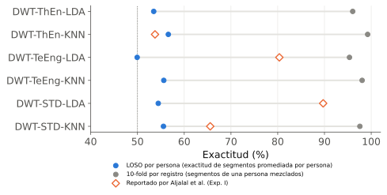
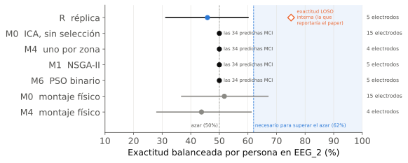
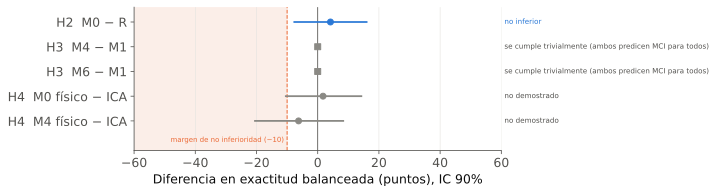
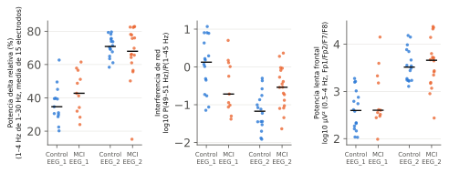
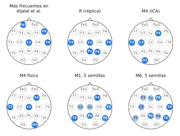

1 · Contexto
- El MCI suele preceder a la demencia. El EEG en reposo es barato y portátil; un dispositivo con pocos electrodos facilitaría el tamizaje.
- Aljalal et al. (2024, Sci Rep) reportaron hasta 95% de exactitud con 5–7 electrodos elegidos por NSGA-II, en 24 personas, con validación LOSO.
- Pero eligieron y evaluaron con las mismas personas, no publicaron código y no hicieron prueba externa.
2 · Pregunta
¿Ese 95% describe cómo funcionaría el método con personas nuevas, o cuánto se ajustó a las 24 que ya tenía?
Datos (públicos, Isfahan)
| EEG_1 | EEG_2 | |
| Uso | desarrollo | prueba única |
| Personas | 24 (11 MCI) | 34 (18 MCI) |
| Equipo | 19 canales, 256 Hz | igual |
| Análisis | primeros 10 min | primeros 10 min |
3 · Diseño
EEG_1 · 24 personasréplica independiente en Python + controles diagnósticos
↓
Congelar 5 métodosR (réplica) · M0 · M4 · M1 · M6 + montaje físico
↓
Preregistro en OSFhipótesis, reglas de decisión, SHA-256 de código y datos
↓
EEG_2 · 34 personasmismo centro y equipo; prueba única, sin ajustes
4 · Métodos comparados
| R | Réplica del paper: DWT + entropía, 19 canales, NSGA-II, regla de máxima exactitud |
| M0 | EEG limpio con ICA, sin Fp1/Fp2/F7/F8, potencia relativa por banda, LDA regularizado |
| M4 | Como M0, 1 electrodo por zona (búsqueda exhaustiva de 180 combinaciones) |
| M1 | Como M0, NSGA-II con la regla del paper (5 semillas) |
| M6 | Como M0, PSO binario que penaliza cada electrodo (5 semillas) |
| Físico | M0 y M4 sin referencia promedio ni ICA: electrodos reales |
5 · Desarrollo: de dónde salen las cifras altas

- Fuga entre segmentos: por persona, 50–57%; mezclando segmentos de una misma persona, 90–99%. El 89.7% del paper coincide con nuestro 89.8% mezclado.
- Sesgo de selección: NSGA-II llega a 72–79% con etiquetas al azar.
- Ojos: Fp1 y F8, de los más elegidos en el paper, tienen 68% y 39% de señal ocular.
6 · Prueba externa preregistrada

La réplica tenía 75.1% interno y obtuvo 45.8% en personas nuevas. Los otros cuatro métodos clasificaron a las 34 personas como MCI.
7 · Hipótesis
| H1 | La réplica cae fuera de su exactitud interna | Confirmada |
| H2 | M0 no es inferior a la réplica | Trivial |
| H3 | M4/M6 no inferiores a M1 con menos electrodos | Trivial / no |
| H4 | Montaje físico no inferior a ICA | No concluyente |
“Trivial”: se cumple por regla, pero ambos métodos predicen MCI para todos, así que no prueba que funcionen.

8 · ¿Por qué fallaron?

- Las dos bases son del mismo centro, pero EEG_2 está dominada por delta (69% frente a 40%). Como en EEG_1 el MCI tenía algo más de delta, los modelos mandan a todos a MCI.
- El ruido de la red eléctrica (50 Hz) se asocia con el diagnóstico en sentidos opuestos en cada base: un confusor de adquisición.
- Ni el AUC (0.40–0.52) ni estandarizar cada base por separado revelaron señal.
9 · Electrodos elegidos

Estables entre semillas, pero sin valor en personas nuevas: estabilidad no es validez.
10 · Conclusiones
- Las exactitudes reportadas no se transfieren a personas nuevas.
- El cambio de dominio y los confusores de adquisición pesan más que la señal del MCI.
- Minimizar electrodos solo tiene sentido después de demostrar que la señal generaliza.
11 · Protocolo mínimo que proponemos
Evaluar por persona, nunca por segmento
Selección anidada dentro de la validación
Comparar contra etiquetas revueltas
Reportar AUC además de exactitud
Revisar ojos y ruido de red por grupo
Reportar el montaje físico
Probar si las bases se distinguen
Preregistrar una prueba externa única
Limitaciones: muestras pequeñas (potencia 0.84 solo si la exactitud real fuera 70%); no se pudo verificar que EEG_2 use criterios idénticos; se probó la mejor configuración de selección de canales del paper, no todas.